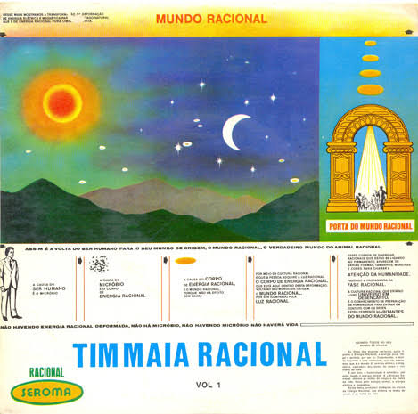
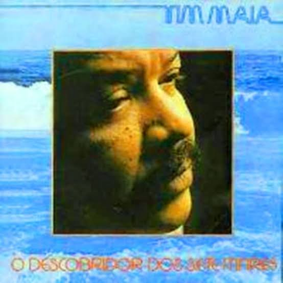
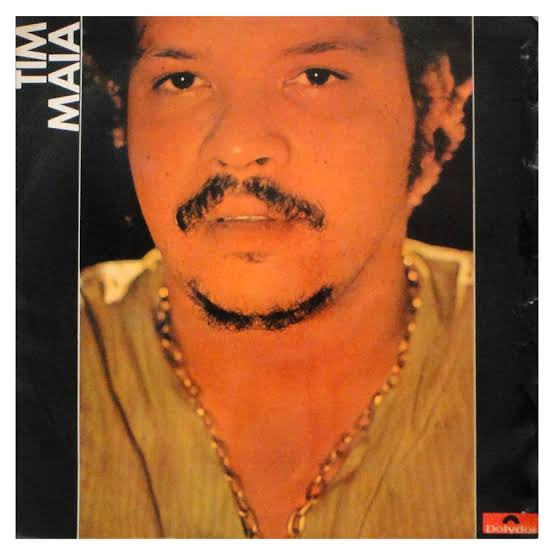

Tim Maia: cantor, compositor e empresário.
Tinha em suas musicas elementos de generos musicais
muito diversificados, como: Soul, Funk, Disco, Pop, Rock, Baião e MPB.
Reconhecido como um dos maiores icones da musica brasileira
MÚSICAS




